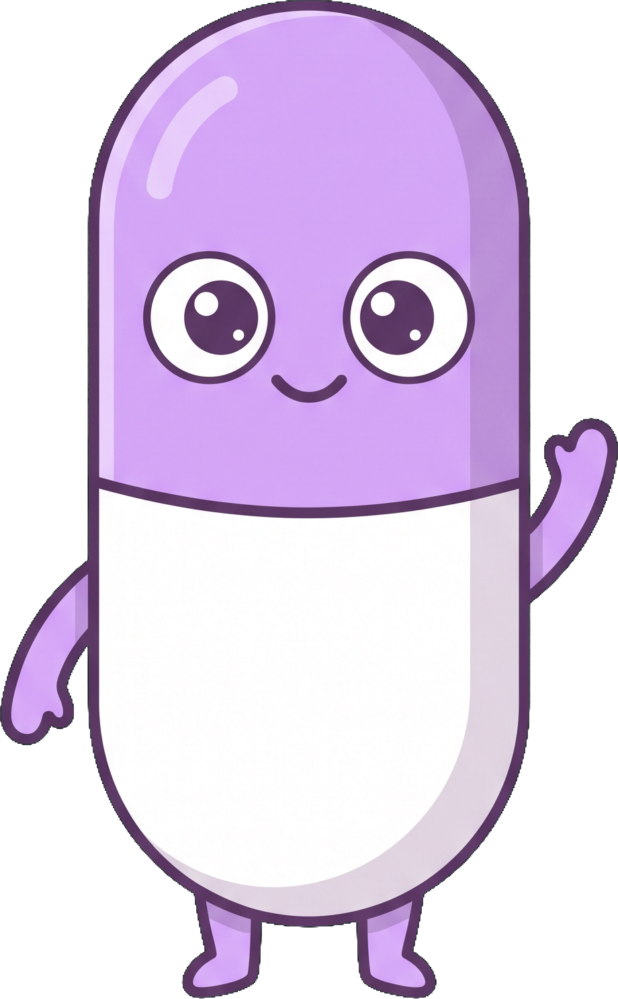
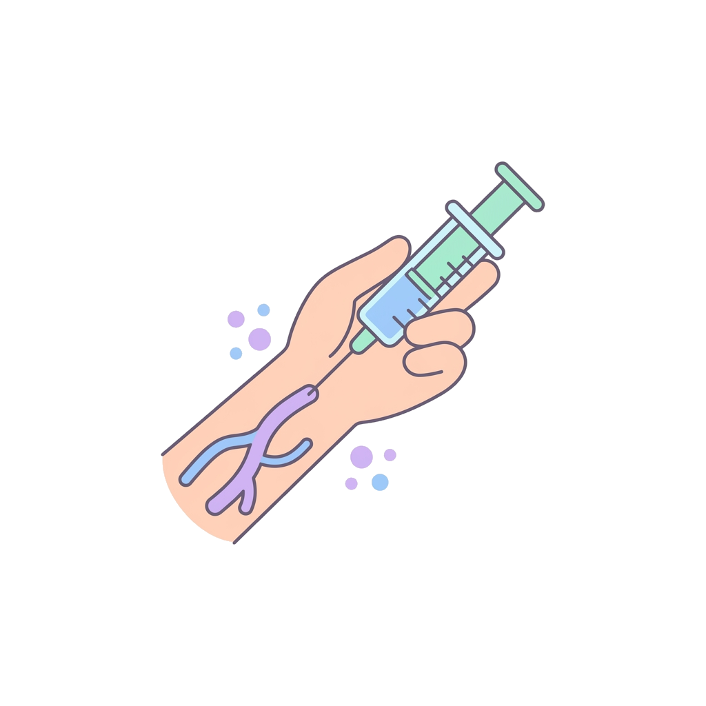
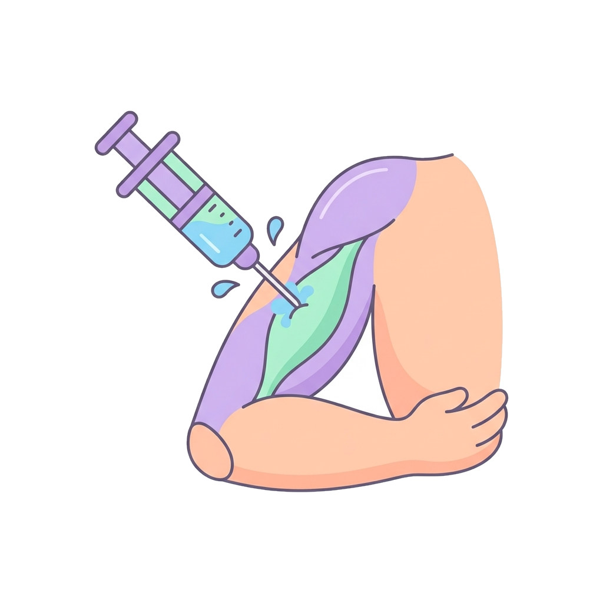
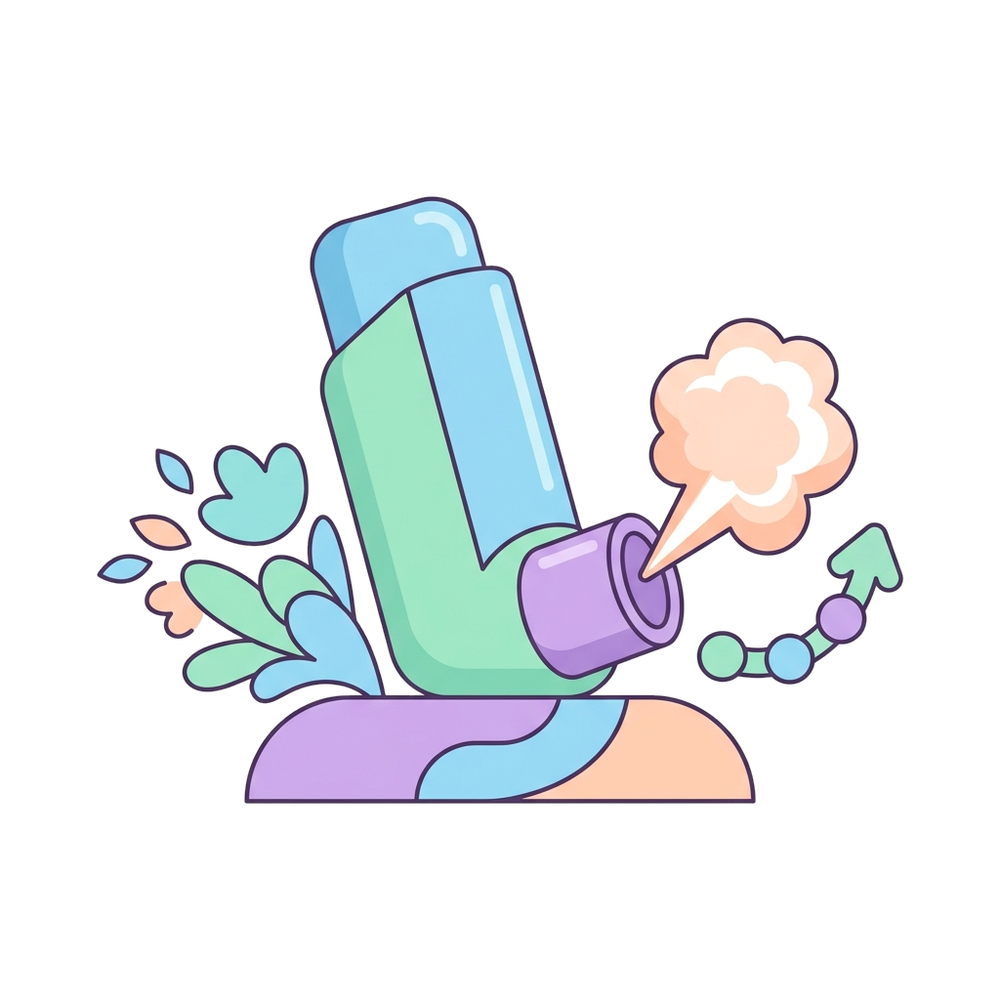
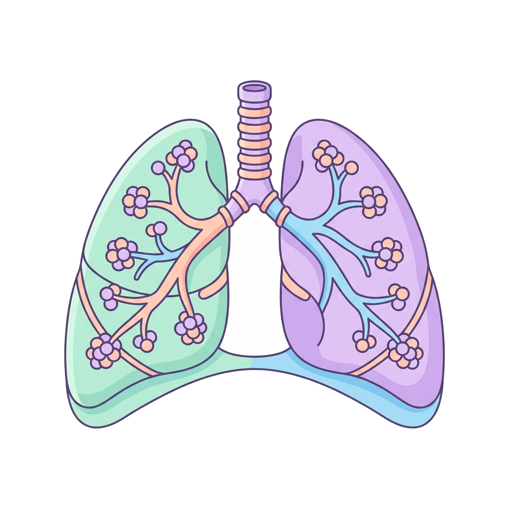
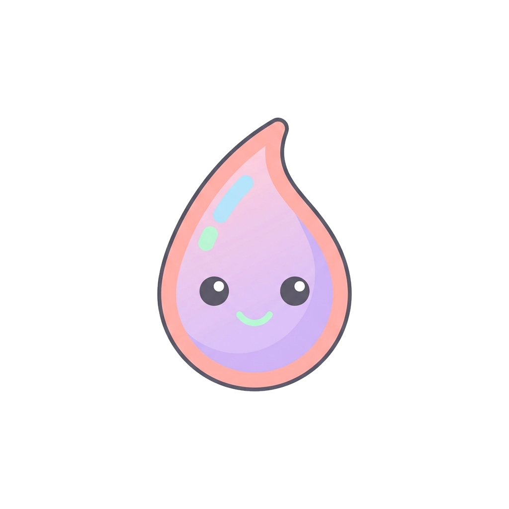

5 · Vie di somministrazione
Via parenterale e inalatoria
Via parenterale (IV, IM, SC)


Endovenosa (IV)
Biodisponibilità del 100%: nessun assorbimento,
il farmaco entra direttamente nel sangue. È la via dell'emergenza.

Intramuscolare (IM)
Consente volumi moderati e veicoli oleosi,
con effetto deposito.
Sottocutanea (SC)
Assorbimento lento e continuo, per esempio
l'insulina.
Sono vie iniettabili: rompono la barriera cutanea, quindi
richiedono sterilità e personale addestrato.
Via inalatoria→→

Aerosol
Alveoli
SangueSomministrazione di gas o aerosol nelle vie aeree (polmoni).
- Meccanismo: l'ampia superficie degli alveoli permette un assorbimento molto rapido.
- Ampiamente usata per effetti locali — broncodilatatori nell'asma — minimizzando gli effetti collaterali sul resto del corpo.
16